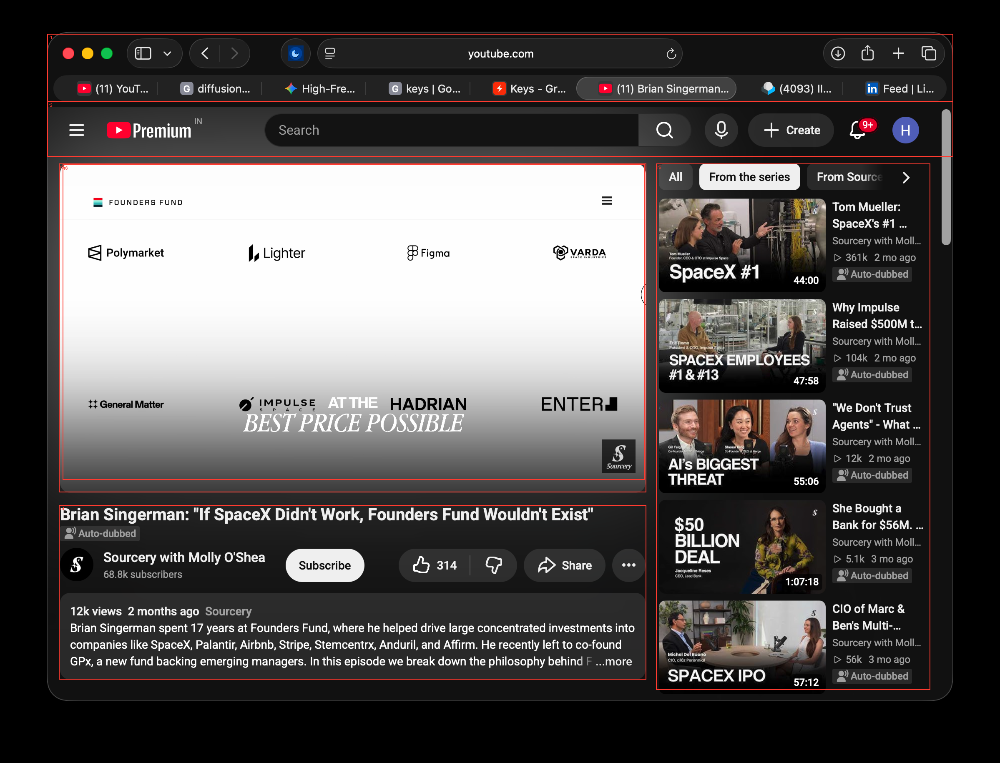
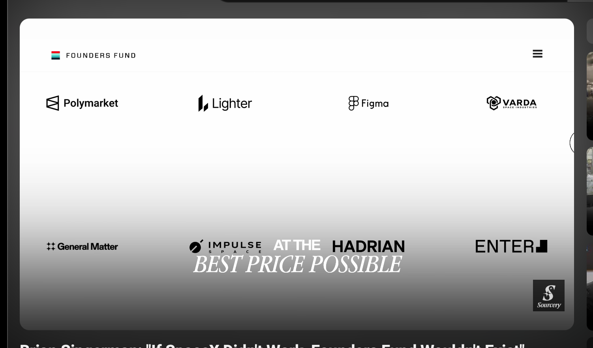
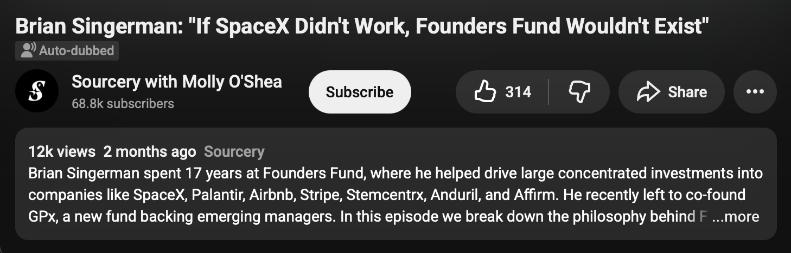

Recursive screen interpretation
Model hypotheses; inspect evidence and uncertainty.

Reconciled context
{}r0: browser_youtube_window

{
"id": "r0",
"parent": null,
"depth": 0,
"label": "browser_youtube_window",
"box": [
0,
0,
2398,
1830
],
"status": "analyzed",
"crop_file": "crops/r0.png",
"crop_box": [
0,
0,
2398,
1830
],
"observations": [
"Mac OS style window frame with top controls (red, yellow, green buttons).",
"Safari-style tab and URL bar showing 'youtube.com'.",
"YouTube Premium interface header with search bar, create button, notifications badge ('9+'), and profile icon ('H').",
"Main content area with embedded video player displaying logos (Founders Fund, Polymarket, Lighter, Figma, Varda, etc.).",
"Video metadata underneath: title 'Brian Singerman: \"If SpaceX Didn't Work, Founders Fund Wouldn't Exist\"', channel 'Sourcery with Molly O'Shea', Subscribe button, like/dislike/share buttons, and expandable description box.",
"Right sidebar containing recommendation video list with category filter pills at the top."
],
"interpretations": [
"Desktop web browser running YouTube viewing an interview video.",
"The video content features a discussion about Founders Fund portfolio companies."
],
"uncertainties": [],
"proposal_issues": []
}r1: window_titlebar

{
"id": "r1",
"parent": "r0",
"depth": 1,
"label": "window_titlebar",
"box": [
113,
81,
2285,
243
],
"status": "uninspected",
"reason": "Standard macOS window controls, tabs, and URL bar."
}r2: youtube_header
{
"id": "r2",
"parent": "r0",
"depth": 1,
"label": "youtube_header",
"box": [
113,
243,
2285,
375
],
"status": "uninspected",
"reason": "Main navigation and search header of YouTube."
}r3: video_player_content_area

{
"id": "r3",
"parent": "r0",
"depth": 1,
"label": "video_player_content_area",
"box": [
141,
392,
1549,
1180
],
"status": "analyzed",
"reason": "Examine video player controls, current timestamp, and embedded graphics detail.",
"crop_file": "crops/r3.png",
"crop_box": [
94,
345,
1596,
1227
],
"observations": [
"A white-to-grey gradient background displayed within the YouTube video player viewport.",
"Upper left contains Founders Fund logo with stripes icon.",
"Upper right shows a hamburger menu icon inside the video frame.",
"Rows of company logos displayed: Polymarket, Lighter, Figma, Varda Space Industries, General Matter, Impulse Space, Hadrian, ENTER.",
"Overlayed italic stylized text 'AT THE BEST PRICE POSSIBLE' centered over Impulse and Hadrian.",
"Bottom right corner features a square watermark icon with 'S Sourcery'."
],
"interpretations": [
"Frame from an interview video displaying portfolio companies or investments associated with Founders Fund."
],
"uncertainties": [],
"proposal_issues": []
}r4: video_details

{
"id": "r4",
"parent": "r0",
"depth": 1,
"label": "video_details",
"box": [
141,
1211,
1549,
1629
],
"status": "uninspected",
"reason": "Contains video title, channel info, action buttons, and text description.",
"crop_file": "crops/r4.png",
"crop_box": [
116,
1186,
1574,
1654
]
}r5: recommended_sidebar
{
"id": "r5",
"parent": "r0",
"depth": 1,
"label": "recommended_sidebar",
"box": [
1573,
392,
2230,
1654
],
"status": "uninspected",
"reason": "Sidebar list of related videos and category chips."
}r6: video_viewport
{
"id": "r6",
"parent": "r3",
"depth": 2,
"label": "video_viewport",
"box": [
150,
394,
1545,
1150
],
"status": "uninspected",
"reason": "Main video player screen showing graphic slides."
}